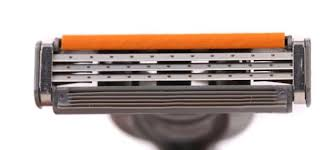

Tu as peut-être un rasoir avec des lames remplaçables. Mais, que faire lorsque tu t’es trompé.e de modèle ? Si tu n’as pas encore ouvert l’emballage et que tu es encore en possession du ticket de caisse, tu peux toujours le ramener au magasin. Mais si ce n’est pas le cas, difficile de mettre l’intrus directement à la poubelle et pour autant inutile t’encombrer, pour un temps indéterminé, avec un produit que tu n’utiliseras jamais. Peeulea propose de signaler que tu possèdes des modèles dont tu n’as pas l’usage. Tu peux ensuite demander ce que tu souhaites en faire. Si tu t’es trompé.e de modèles, d’autres ont peut-être commis la même erreur. Aussi, tu peux mentionner le modèle que tu utilises et être alerté.e lorsqu’une personne en a à proposer.
